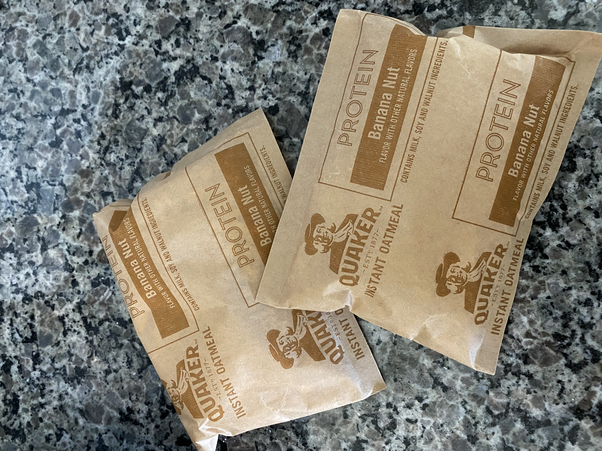
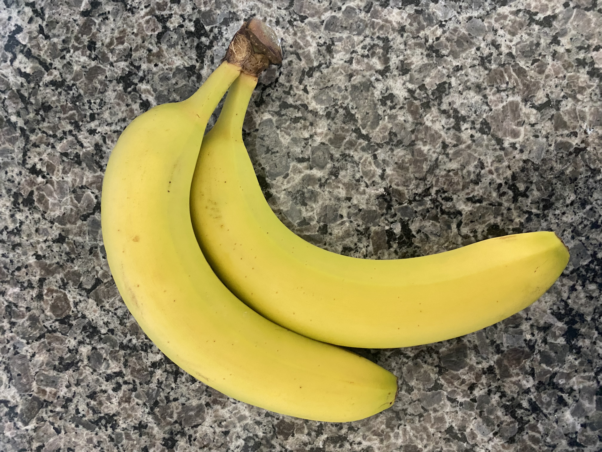
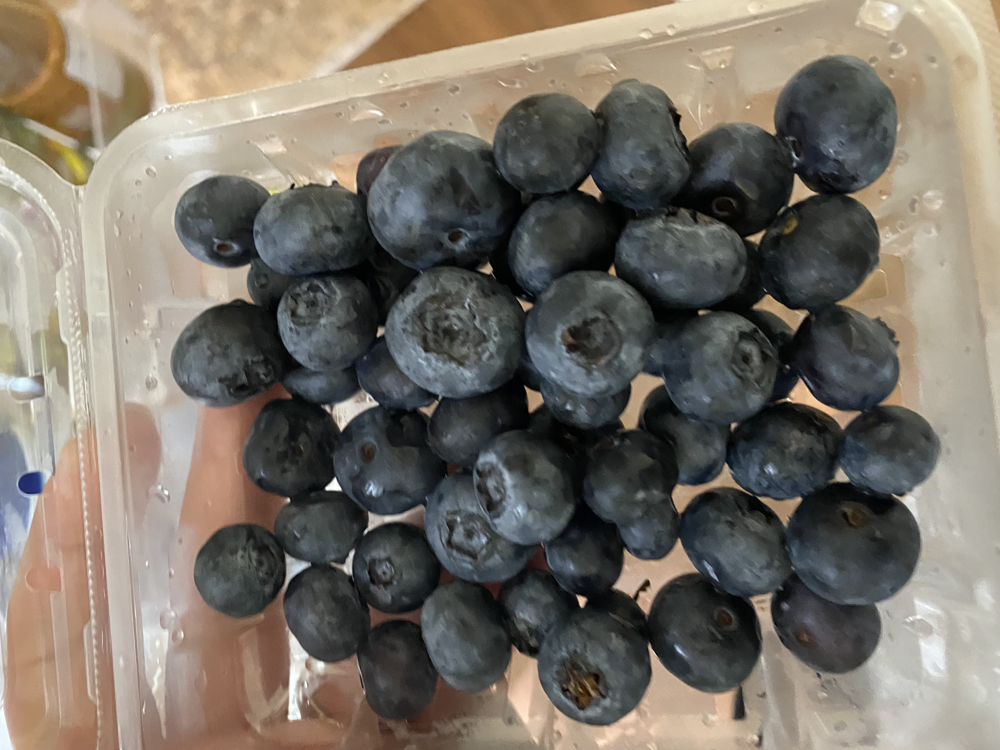
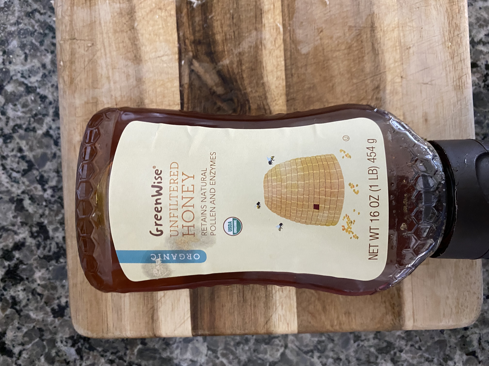
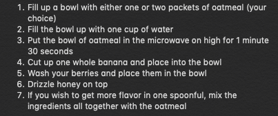
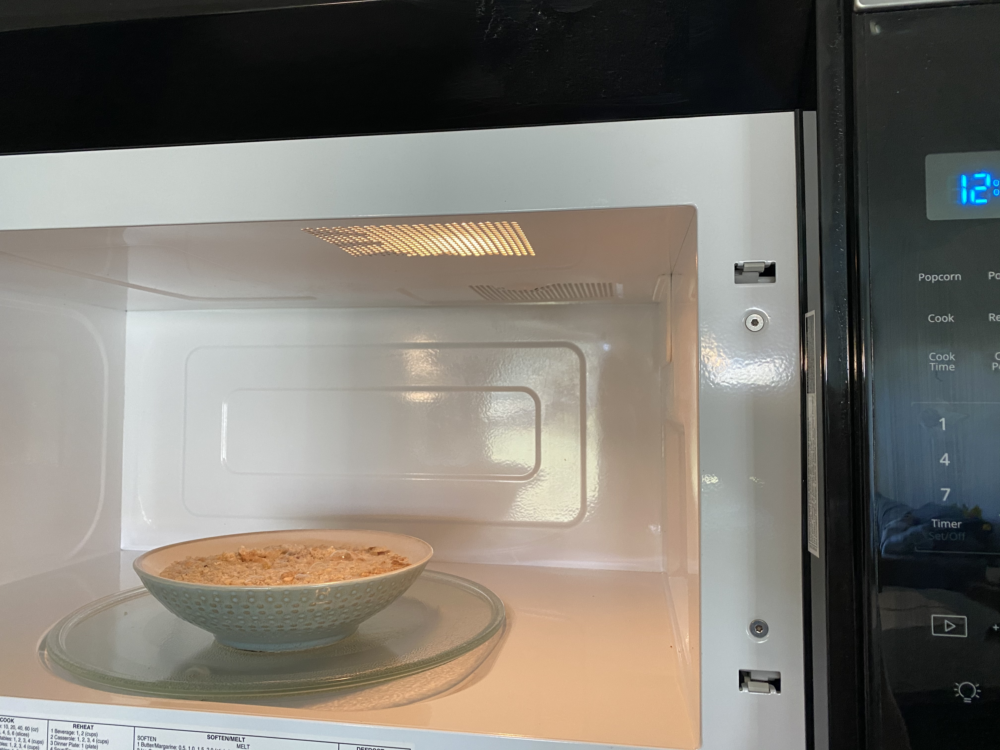
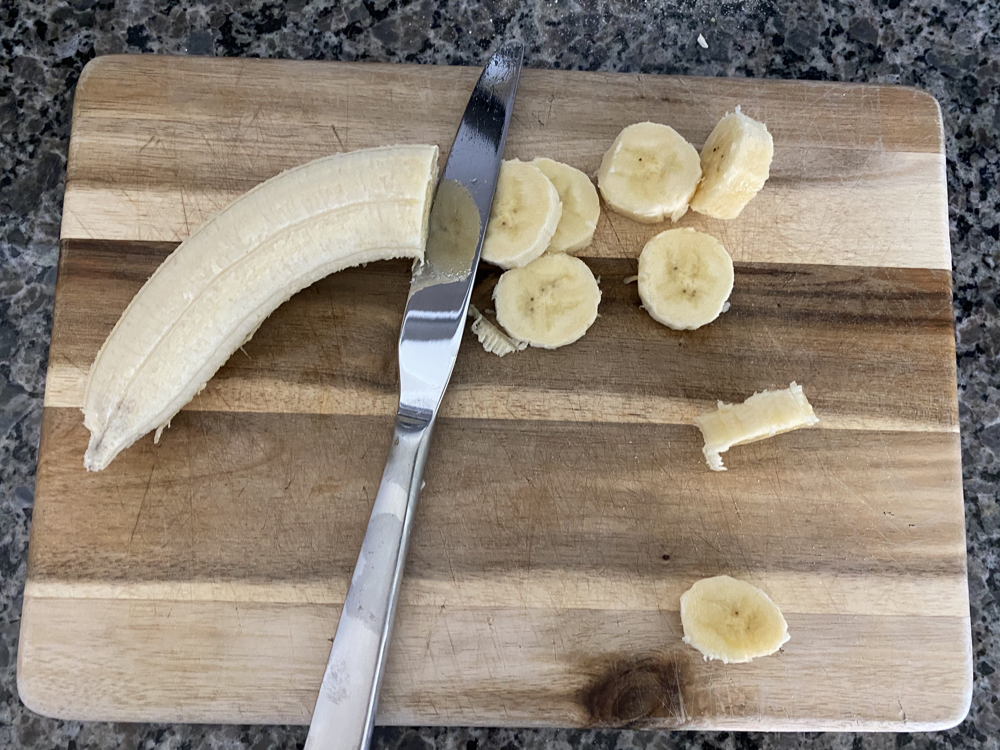

This oatmeal is super easy to find at any local grocery store or pharmacy (such as CVS). There are multiple different flavors-- feel free to choose the one that is most appealing to you. Personally, my favorite and the one I use the most is the protein banana nut oatmeal.

Feel free to use either one or two bananas! Three would be a bit too much.

My favorite berries to use in this recipe are rasberries, blackberries, and blueberries.

I like to use organic honey, as it's sweeter and richer.
Follow these very simple ingredients to make your oatmeal:
  